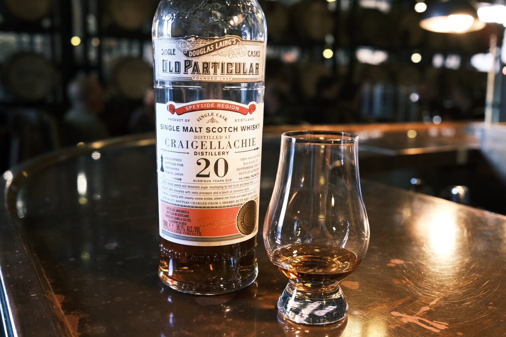

Craigellachie 1995 Douglas Laing 20 years 59.1% (sherry butt)
Bottled for Shinanoya in Japan, cask DL10962.
Colour Ruby.
Nose Aniseed, fennel, mint, caraway. Dark chocolate. Luxardo cherries, pineapple juice. Sort of like a New Orleans cocktail (okay: absinthe wash). With water, more liquorice.
Palate Milky texture. Dried fruits, rum and raisin, Christmas cake. Fennel and aniseed notes again. What would this taste like in a Sazerac? Malty. Pretty boozy. With water, orange zest, a splash of pineapple juice.
Finish Malty. Dried fruits and brown sugar. Chocolate, perhaps a splash of milk tea. Pineapple? With water, a bit of coffee.
Comments Nose is amazing. Palate and finish is more conventional, but the malt has serious character. 88/100.

Posted by Dominic on 15 Jun 2021